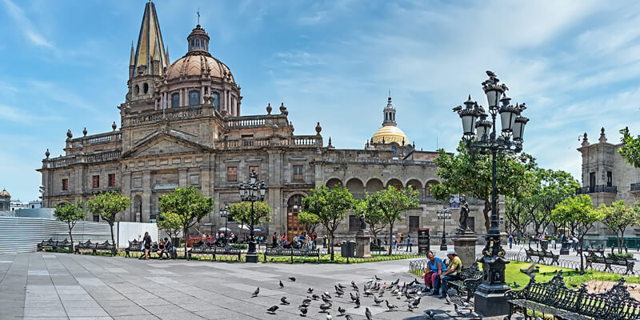
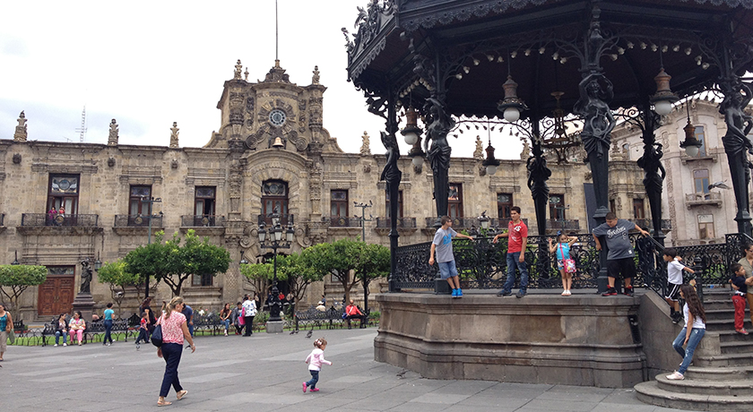

El corazón de la ciudad
La perla de occidente
El Centro de Guadalajara es la parte originaria de dicha ciudad, el cual se compone de edificaciones, monumentos, plazas y parques construidos a lo largo de sus más de cuatro siglos de historia. En él se encuentran expresiones de arquitectura Colonial, barroca, neoclásica, Art Nouveau y demás. El complejo nace con la fundación de la ciudad en el año de 1542 por los españoles, cuyo lugar se estima a espaldas del Teatro Degollado donde se encuentra la Plaza Fundadores.
El Centro Histórico de la ciudad se ha caracterizado por cambiar a lo largo del tiempo, y aunque aún se conservan varios edificios que datan del siglo de la fundación de la ciudad, muchos de éstos fueron derribados para dar paso a edificios más funcionales, avenidas más amplias, así como para construir la Cruz de Plazas que rodea la Catedral de Guadalajara y la Plaza Tapatía.
Guadalajara cuenta con un centro histórico muy bien mantenido, con gran arquitectura y mucho que contar. La ciudad fue fundada por los españoles en el año 1542 y desde entonces se ha destacado en varios hechos históricos y culturales; es cuna de los mariachis y sede del Festival Internacional del Cine de Guadalajara y de la Feria Internacional del Libro de Guadalajara. El punto de comienzo para una recorrida podría ser su famosa Catedral, dominada por dos torres con agujas neogóticas. La misma fue terminada en el año 1618 y actualmente se encuentra en riesgo edilicio a raíz de los numerosos sismos por los que pasó.
La Plaza de Armas, recientemente renovada, cuenta con un muy cuidado jardín, con un bello quiosco de hierro forjado estilo francés en el centro e iluminado por farolas del mismo estilo. Esta plaza es lugar de reunión y paseo de familias, donde siempre habrá algún vendedor de globos, dulces o nieves para los más pequeños.



 3336765014
3336765014
{kind=link}
{kind=link}
{kind=link}